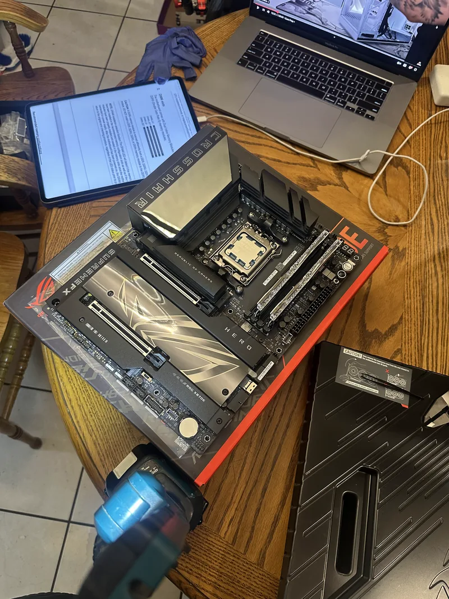
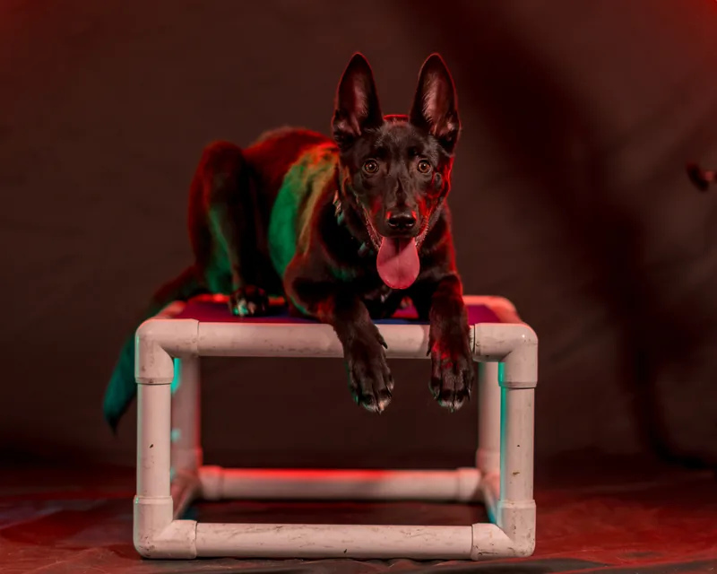
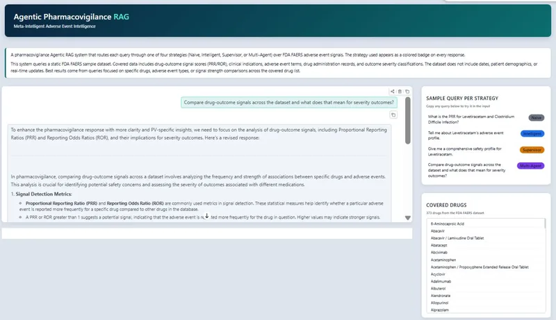
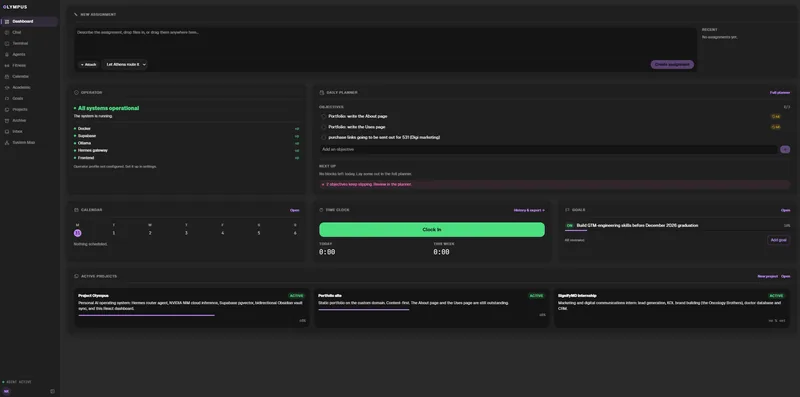
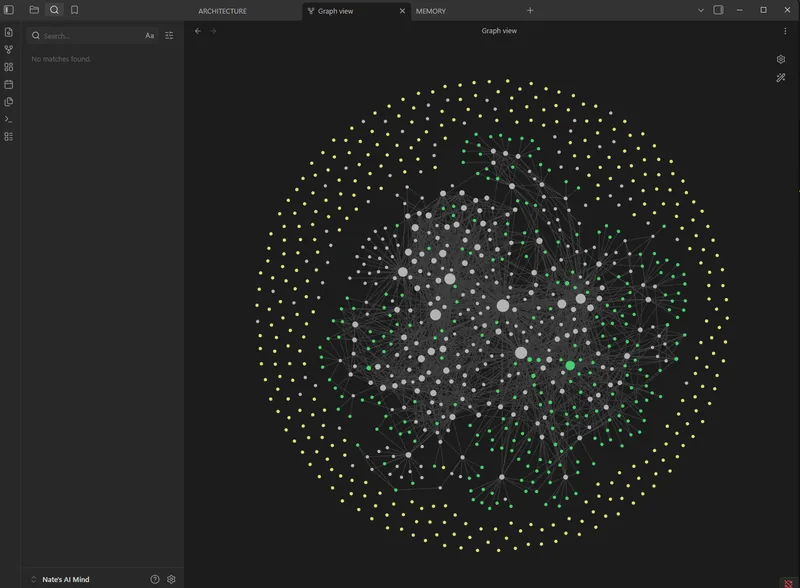
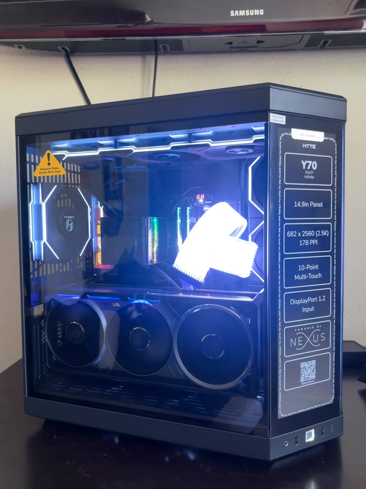
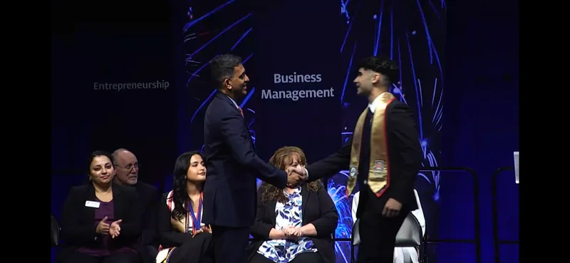

About rebuild / step 6 / style tile
Locked. Nothing is added. The three ink steps are the whole text
system: there is deliberately no fourth, dimmer step, because
rgba(245,245,245,0.38) lands at 3.2:1 on
#2A2A2A and fails AA. Contrast ratios below are measured
against the page ground.
Sitewide, style.css paints every heading
#c084fc. On this page that is switched off: headings go
ink-1. The accent survives in four places and is banned everywhere
else, which is what lets the one prose moment in section 4 actually
register.
Allowed, all four
#7c46af, white label.Forbidden
Plus Jakarta Sans for everything structural, JetBrains Mono for
captions, dates, and the one figure. Weight tops out at
600: only 400, 500 and 600 have @font-face rules,
so the current h1-h6 { font-weight: 700 } and
.projects-heading { font-weight: 800 } are rendering as
synthesised faux bold. Specimens use the real copy.
display / 40-60px / 600 / 1.08 / -0.028em / 700px measure / section 1 only
I learn how things work by taking them apart.
turn / 32-52px / 600 / 1.10 / -0.024em / 22ch / section 8 only, the page's second largest type
Where I actually am.
h2 / 28-40px / 600 / 1.12 / -0.02em / 20ch / everywhere else
lede / 18-21px / 400 / 1.55 / 46ch
Marketing grad student at Arizona. It used to be robotics kits and PCs. Now it is retrieval pipelines and agent systems.
body / 17px / 400 / 1.72 / 66ch plus the one accent moment
That list produced 600 verified leads and converted 280 of them into event registrations. Before that, the building and the marketing were two separate interests. Here they were the same job.
caption / mono 12px / 400 / 1.5 / +0.015em / ink-3 / 60ch
ROG Crosshair X870E, still in the tray. Manual open on the iPad, build video running on the laptop. I had not done this before.
record / title 16px 500 + mono 12px meta / tabular
M.S. Marketing, focus on analytics and AI
University of Arizona, Eller College of Management. Expected December 2026. Dean's List.
Eleven assets from five light sources. Warm kitchen tungsten, blue
RGB, red and teal gels, a dark IDE, and one light-themed web app.
They are unified structurally, not cosmetically. Every asset sits in
the same plate: #1F1F1F, 8px radius (the same radius
.project-pane already uses), 1px hairline. The plate then
splits into two classes.
Photo class. The two worst offenders: warm kitchen tungsten, and a hot red gel.

raw
treated

raw
treated
Screen class. The light asset is the hardest one on the page.

rag-app, raw
rag-app, bezel plus knock-down

olympus-dashboard, treated

vault-now, treated
Photo class, three layers.
filter: saturate(.62) contrast(1.12) brightness(.86) puts
every photograph in the same low brightness band as the page. A
#39405A soft-light wash at 50% is the temperature lock: it
pulls warm kitchen tungsten down and cool RGB up until they meet. Then
a flat rgba(42,42,42,.22) veil, so every image on the page
literally contains 22% of the page's own colour, plus a bottom gradient
that welds the image into the ground so nothing ends on a hard bright
line. Fade, never blur.
Screen class. 8px charcoal bezel and
brightness(.88) saturate(.82) contrast(1.03). The bezel is
the structural fix: a screenshot never touches the plate edge, so a
light rectangle always has charcoal around it. The one light asset
takes brightness(.80) saturate(.72) plus a flat 16%
#1F1F1F veil, dropping its paper white from
#FFF to roughly #B0B0B0. It reads as a lit
window rather than a hole. Because that knock-down costs real
legibility on the page's only screenshot of the capstone, wire the
plate into the existing .image-lightbox-overlay so the
untouched original is one click away.
Every plate on the page begins as a closed charcoal panel and
opens. Two shutters, the same #1F1F1F as the
plate, meet at the centre line and slide to the edges under scroll
scrub while the image behind eases from
scale(1.05) to scale(1). Nothing but
translateY and scale moves.
It is the page's thesis performed ten times: a panel comes off and you see inside. It also sets the pace, because an image is not readable until you have scrolled it open, which is the controlled cinematic scroll without any scroll-jack. Section 6 is the one variation: the two vault plates open in opposite directions, so the comparison assembles as a matched pair.

Same machine, done. HYTE Y70, RTX 5080 Astral, radiator mounted on the side.
8px base. Section padding is the pace control: 144px at desktop is what gives each section room to land before the next one arrives.
Widths: text column 864px, wide breakout
min(1120px, 100vw - 2rem), section 4
620px, section 8 700px.
One button on the page. Everything else is a link, so there is no ambiguity about which action is the action. Labels are three words or fewer and cannot wrap.
No boxes, no cards, no dot leaders. Two columns split by one hairline. This section confirms, it does not argue, so it carries the least visual weight of anything on the page.
M.S. Marketing, focus on analytics and AI
University of Arizona, Eller College of Management. Expected December 2026. Dean's List.
B.S. Business Administration
University of Arizona, 2025. Dean's List. Phi Theta Kappa tuition scholarship.
A.A. Economics, A.A. Economics for Transfer, A.A. Liberal Arts and Sciences
Santa Barbara City College, 2023. Phi Theta Kappa. President's Honor Roll.
Marketing and Digital Communications Intern
SignifyMD. 2026 to present.
Personal Trainer and Member Experience Specialist
VASA Fitness. 2023 to 2025.
Resident Handler and Operations Assistant
Bay Area K9 Association. 2021 to 2023.

Eller, 2025.